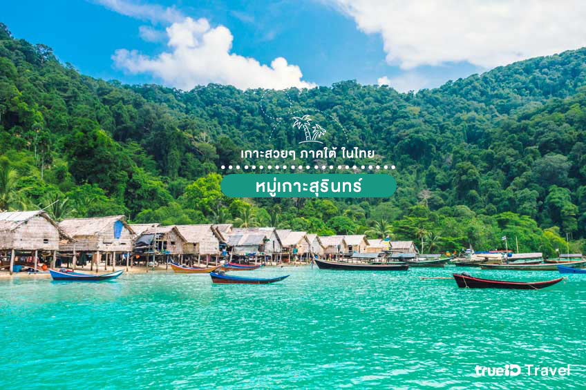
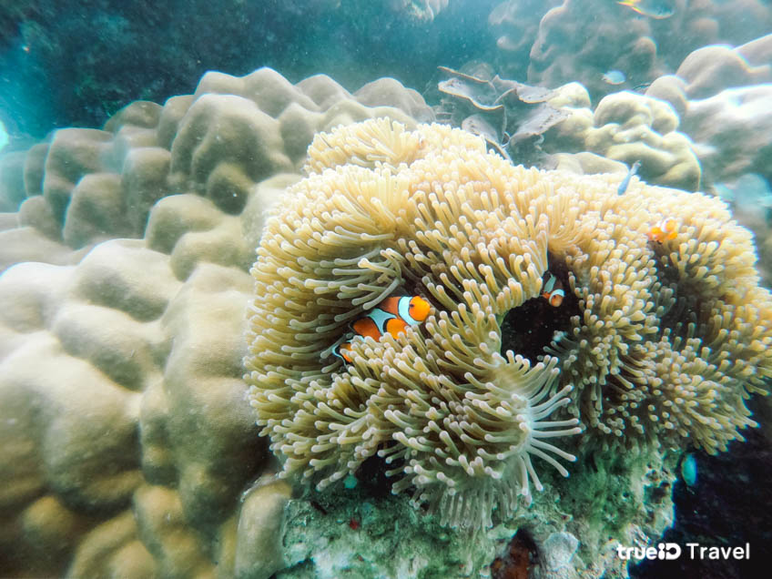

หมู่เกาะสุรินทร์ พังงา
อุทยานแห่งชาติหมู่เกาะสุรินทร์ จังหวัดพังงา เป็นหมู่เกาะที่อยู่ในทะเลอันดามันและติดชายแดนประเทศเมียนมาอีกด้วย หมู่เกาะสุรินทร์เป็นสถานที่ท่องเที่ยวที่สวยงามมากๆ ไม่ว่าจะเป็นปะการังนานาชนิด ทั้งปะการังผักกาด ปะการังสมอง ปะการังเขากวาง ดอกไม้ทะเล ฯลฯ นอกจากนี้บริเวณหมู่เกาะสุรินทร์ยังมีปลาทะเลที่สวยงามมากมายพบสัตว์ทะเลที่หายากมากมาย ทั้งเต่าทะเล ฉลามวาฬปลากระเบนราหู และอื่นๆอีกด้วย นับว่าเป็นสวรรค์ของนัดดำน้ำเลยทีเดียว
นอกจากนี้บริเวณหมู่เกาะสุรินทร์ยังมีปลาทะเลที่สวยงามมากมายพบสัตว์ทะเลที่หายากมากมาย ทั้งเต่าทะเล ฉลามวาฬปลากระเบนราหู และอื่นๆอีกด้วย นับว่าเป็นสวรรค์ของนัดดำน้ำเลยทีเดียว